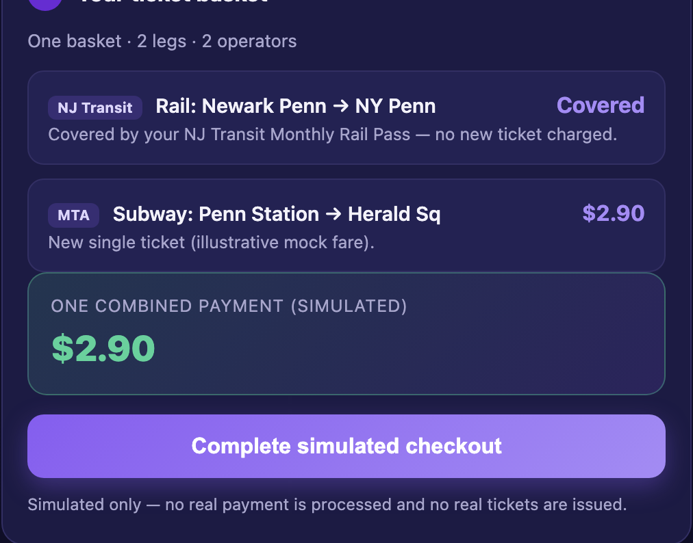
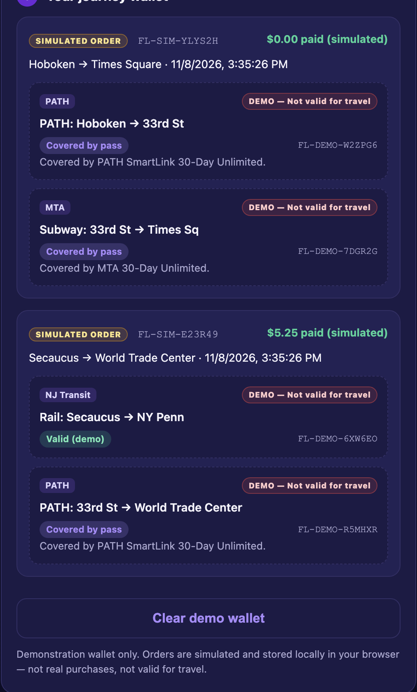

One journey. One payment. Every ride. — a unified transit commerce experience that settles a multi-operator journey in a single checkout and keeps every ticket in one wallet.
Current Status: Build 1 — local prototype (runs on your machine).
Demo: Screenshots below are captured from the working local app/index.html prototype.


Long-term vision: FareLink is a unified transit commerce experience — One journey. One payment. Every ride. It combines Checkout (one transaction for a multi-operator journey), Handoff (all tickets and payment actions organized in one wallet), and Bundles (personalized cross-system subscriptions) into a single account that taps to ride across participating systems.
Build 1 scope (this prototype): A simulated slice of Checkout + Handoff. The rider selects a multi-operator journey, reviews one combined ticket basket, completes a simulated checkout, and accesses a simulated persistent journey wallet. Passes the rider already holds cover their matching legs at no charge (still shown in the wallet). It uses illustrative mock fares, issues only clearly-labeled DEMO tickets, and does not move money or connect to live transit systems. Bundles are out of scope for Build 1.
Who is this for? NJ-resident NYU classmates and friends who commute into Manhattan via NJ Transit rail, PATH, and the MTA subway. They are reachable in person on campus, so I can watch them plan and pay for real commutes.
The painful "Before" workflow: A single door-to-door journey crosses operators (NJ Transit, PATH, MTA), each with its own app, ticket, and payment step. Riders juggle multiple purchases, can't see one combined price, and have tickets scattered across apps — with no single place that also recognizes the passes they already hold.
The "After" workflow with this product: The rider picks a journey, sees one combined basket (with held passes already covering their legs), pays once in a single simulated checkout, and finds every ticket organized in one journey wallet.
Riskiest Assumption: That riders value settling a whole multi-operator journey in one payment and one wallet enough to adopt it — and that operators would ultimately permit unified checkout and ticket issuance. (Build 1 simulates the end-to-end experience to test desirability before any real payment or operator integration.)
Simple Architecture (Build 1): Journey + held passes (browser) → basket builder + simulated checkout (pure JS over mock rules) → DEMO tickets persisted in localStorage → journey wallet. No server, no payment SDK, no network calls beyond loading the local mock-data file.
app/ — a simulated unified transit commerce flow: select a multi-operator journey → combined ticket basket (held passes cover matching legs at $0) → simulated checkout → persistent journey wallet of DEMO tickets. Built in the navy/purple theme, reusing prior data and render patterns. Added real screenshots of the running prototype (populated multi-operator basket and simulated journey wallet) to this Product Page. PRD updated with the “One journey. One payment. Every ride.” vision (Checkout / Handoff / Bundles), reachable user, before/after workflow, core workflow, three non-goals, and the vision-vs-Build-1 distinction.app.js/JSON could run against new markup and silently fail — now cache-busted on load with a visible error banner if the mock data can’t be fetched; and (2) pass coverage that incorrectly covered every route an agency operates — coverage now requires both a matching transit system and an explicitly eligible route, defaulting to “not covered” when eligibility is unknown (verified against covered and uncovered journeys).